ハニーポット構築＆データ解析 Azure環境(T-pot)
今回は、ハニーポット(T-pot ver20.06)をAzure上のLinux Debianver10.11環境に構築、数日間運用してみたのでその構築方法、基本的なソフトの使用方法や注意点、ハッカーがハッキングで攻撃するポート、使用される攻撃やパスワードや傾向などのデータの分析結果を紹介していきます。毎度のことですが誤字脱字が多い所は大目に見てください
T-potとは
今回使用したT-pot ver20.06は20種類以上のハニーポットツールが詰め合わせで入っている、マルチハニーポットプラットフォームです。長くなるので内蔵されているハニーポットの説明は割愛します。ソースコードはGithubで公開されています。ちなみにlogのグラフ化はKibanaによって行われます。ダウンロードはこちらから
環境構築
早速ですが環境構築に入りたいと思います。まずAzureのvirtualmachineから使用する仮想マシンを作成していきます。以下が今回構築した仮想マシンになります。RAMが8GBだと動作が不安定でしたので16GBに変更しました。DebianはVer10.11です。
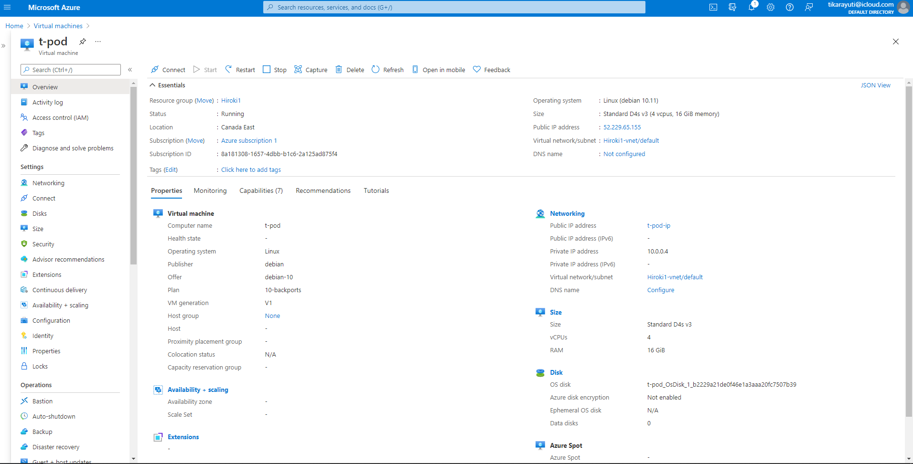
次に作成した仮想マシンに接続するためにSSHで使用するport22番を開けます。
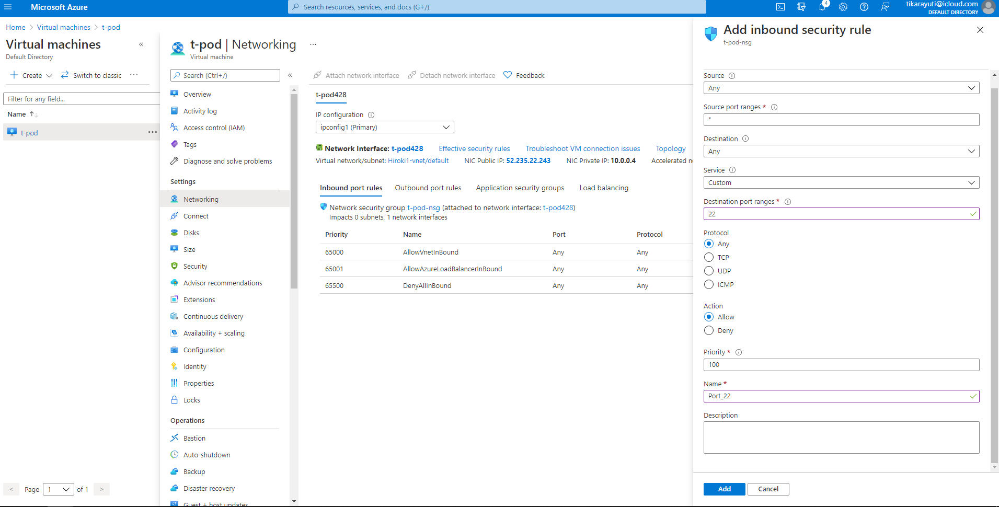
接続の際に使用するSSHのパブリックキーをコピーします。Virtual mathineのreset passwordのところにあります。
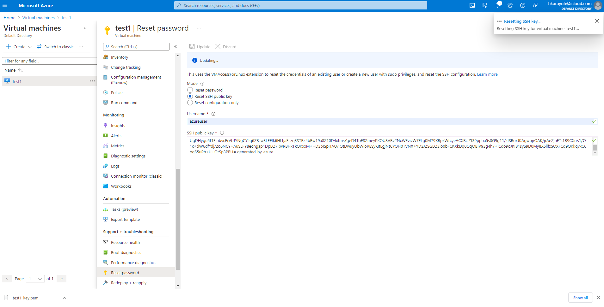
AzureでBashを起動し(画面上段の検索バーの隣から)Viコマンドでテキストエディターを起動しそこに先ほどコピーしたSSHキーをペーストして保存します。Tera Termなどのリモートログオンクライアントなどでも大丈夫です。
sshコマンドで仮想マシンに接続します。コマンドはssh -i ~/.ssh/"sshのpublickeyを保存したファイル名" azure-user@仮想マシンのipアドレスです。
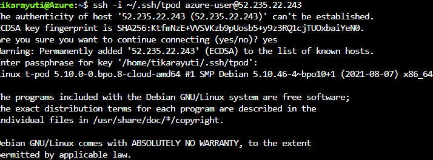
接続が完了したらapt-upgradeコマンドで不具合を回避するためにアップグレードしておきます
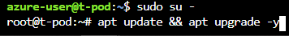
アップグレードが完了したらGitコマンドでT-potのパッケージをダウンロード、その後./install.shでインストールします。10分ほどかかります
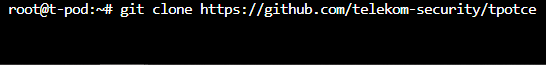
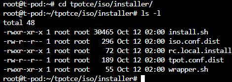
しばらくすると自動でインストーラーが起動します。一番上のstandardを選択しT-potで使用するユーザー名とパスワードを設定します。
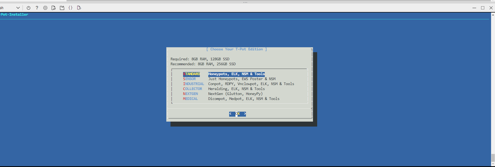
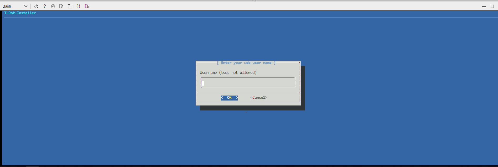
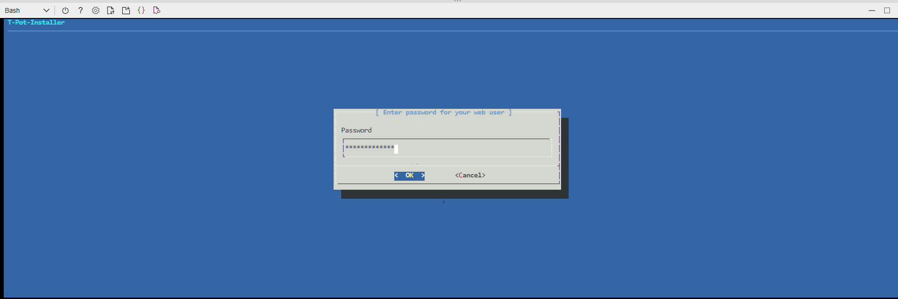
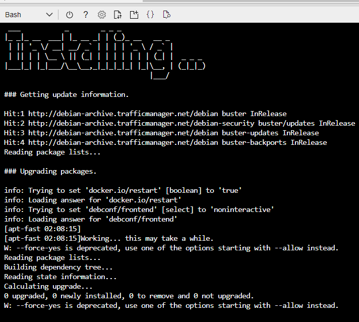
無事インストールが完了したら次に、攻撃を受けるためにポートを開けます。設定は以下の通りです。
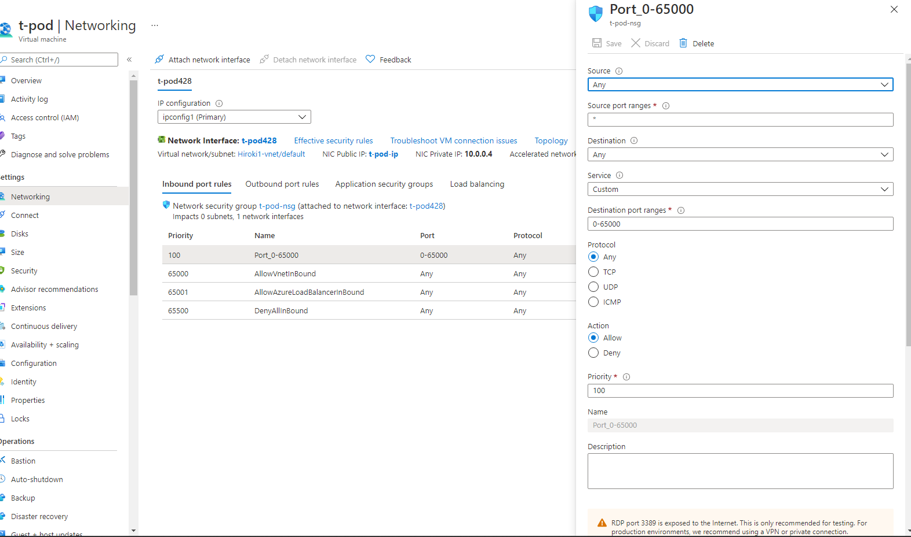
次に、googleなどの検索エンジンからt-potに接続します。アドレスは"仮想マシンのアドレス:64297です"ちなみにポート64297はt-potがグラフデータをグラフ化するのに使用する視覚化ダッシュボードソフトウェア"kibana"のポートです。
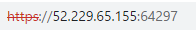
t-potをインストールする際に設定したusernameとpasswordを入力します。
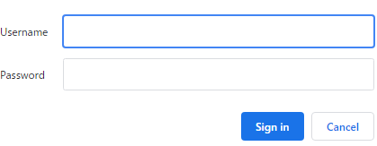
無事T-potに接続できると以下のページが表示されます。Kibanaを選択します。
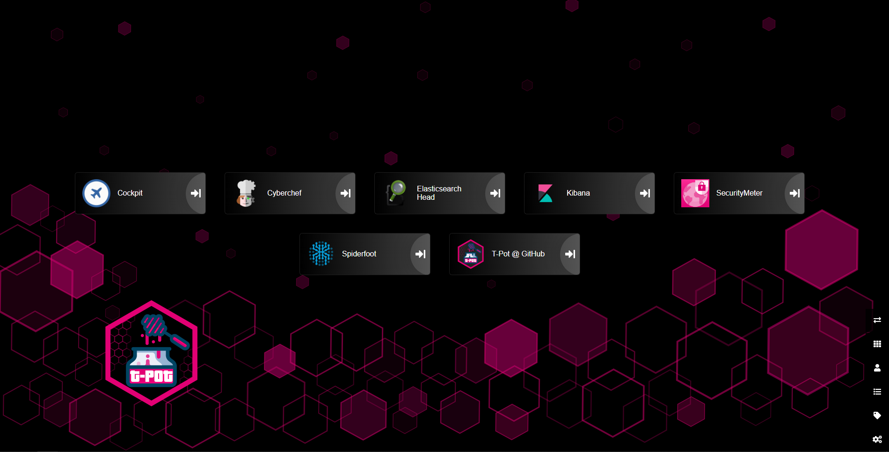
次に一番上にあるT-potのダッシュボードを選択します。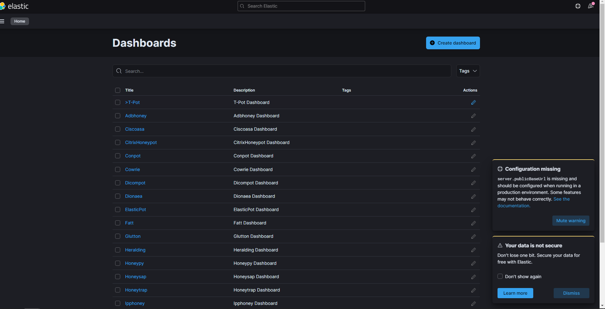
Kibanaが可視化した今まで受けたサイバー攻撃の結果を確認することができます。もうすでに攻撃されてて草。
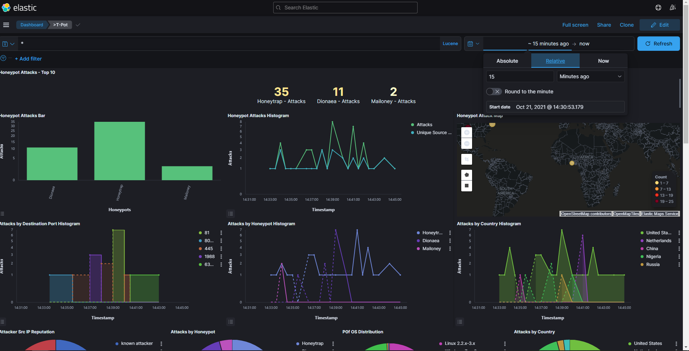
10日程放置しました。30万回近く攻撃を受けていることがわかります。一番多いDionaeaはペイロード(データ本体)とマルウェアにフォーカスしているハニーポットです。監視している代表的なポートはport2/tcp,81/tcp,135/tcp,445/tcp,69/udpです。CowriaはOSSハニーポットでssh(22/tcp)とtelnet(23/tcp)に特化しています。
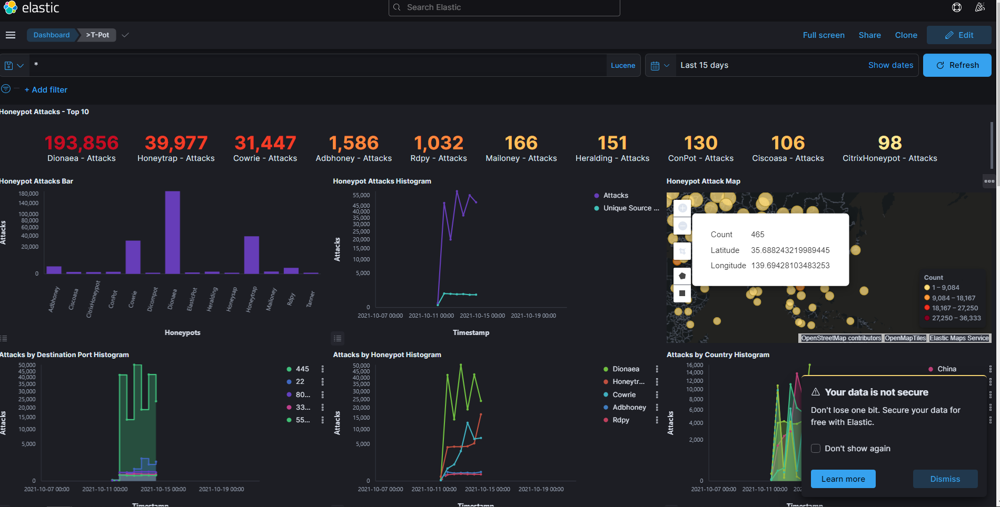
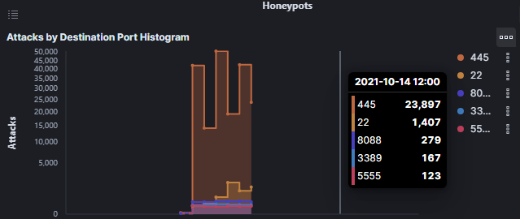
少し下にスクロールすると攻撃に使用されたOSやどこの国からどのような攻撃をどのくらい受けたのかがわかります。マウスでクリックするとさらに詳細な情報を見ることができます。中国、アメリカ、オランダ、ベトナム、インドから頻繁に攻撃されていました。使用されたOSは主にwindows7,8,Linux2.2.x-3.xでした。ちなみに2.2.x-3はLinuxのカーネルの番号です。
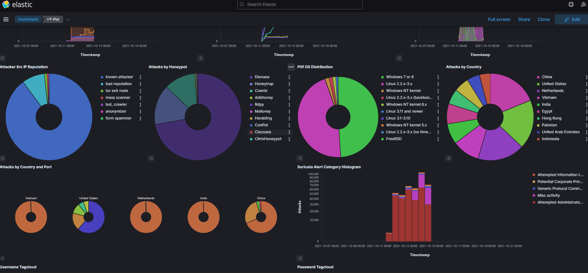
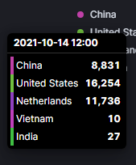
さらに下へ行くと使用されたユーザー名とパスワードを確認することができます。特に多かったユーザー名はrootとsaパスワードは空白、1,1234でログインを試みていることがわかります。
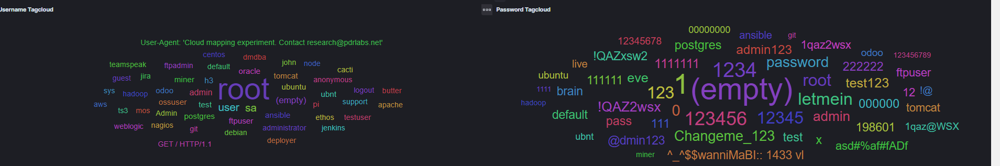
ちなみにユーザー名をクリックするとそのユーザー名と一緒に使用されたパスワードのみに絞って表示してくれます。letmeinが一番多いいのは面白すぎw
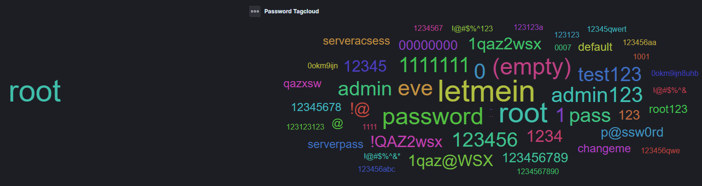
画面横にあるdashboardをクリックすると、いつ誰がどこにどのようにハッキングを試みたかわかります。srcipが攻撃側のip,Destipが受けた側のipになります。
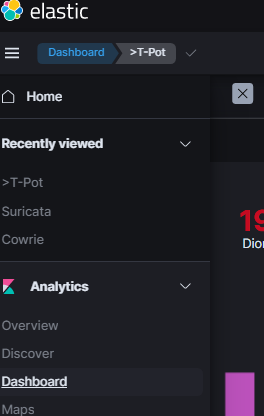
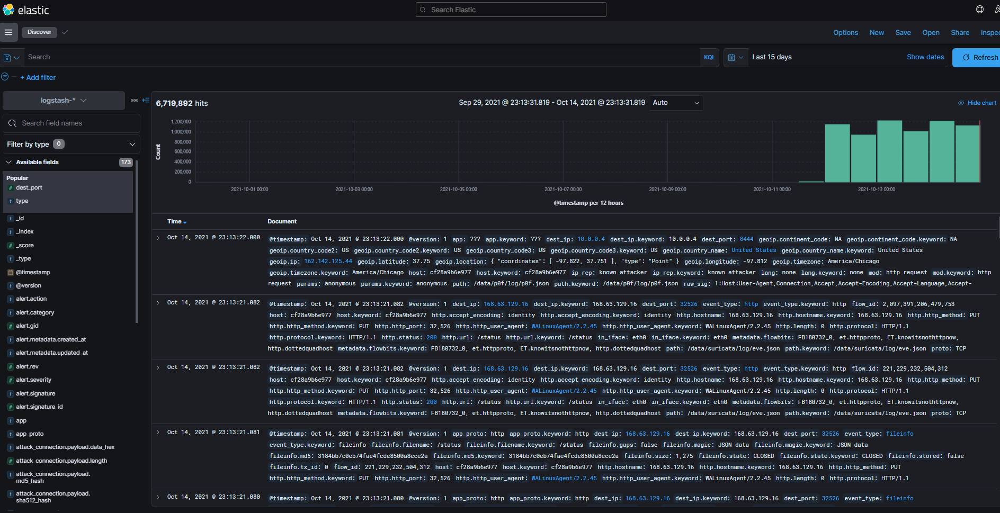
画面左で検索結果を絞ることもできます。http,https,dnsが標的にされていることがわかります。
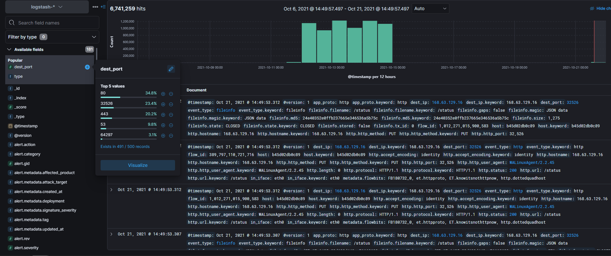
少し長くなってしまいましたがひとまずこれで終了です。続きはまた後日投稿しますのでしばしお待ちを。ハッカーの挙動や攻撃のトレンドなどがわかるのでネットワークやセキュリティ対策に役立てることができますし他にも様々な機能がついているので是非是非一度構築して試してみてください!